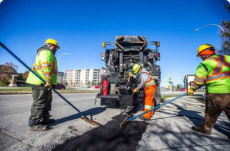
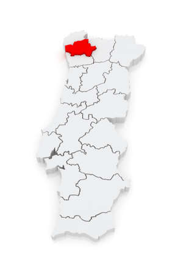

Infraestruturas e Vias Públicas
Passeios Danificados · Falta de sinalização · Buracos na Estrada · Iluminação Pública
Saber mais →Visão em todos os cantos de Braga
Junte-se a nós e contribua para um país mais seguro e eficiente!
Conheça as principais áreas onde atuamos para melhorar a qualidade urbana de Braga.

Passeios Danificados · Falta de sinalização · Buracos na Estrada · Iluminação Pública
Saber mais →Identificação e acompanhamento de problemas urbanos relatados pelos cidadãos em tempo real.
Saber mais →Avaliação da qualidade das infraestruturas e recomendação de ações corretivas especializadas.
Saber mais →Monitorização de todas as vias públicas e infraestruturas através de todos os cidadãos e trabalhadores.
Estamos disponíveis para esclarecer qualquer dúvida.
Preencha os seus dados para sermos mais rápidos a ajudar.

+351 253 000 000
Disponível 24/7Braga, Portugal
Concelho inteiroeyeseverywhere@gmail.com
Suporte onlineA nossa infraestrutura tecnológica permite-nos monitorizar desde as ruas mais movimentadas do centro da cidade até às vias das freguesias mais periféricas de Braga.
